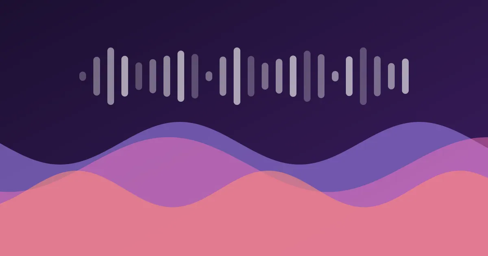

Generative Music in the Browser with the Web Audio API
Build a tiny lo-fi generator with oscillators, filters, a lookahead scheduler and a convolution reverb — the same engine behind this site's music player.

The little player in the corner of my homepage does not stream an MP3. Every note is synthesised in real time by about 200 lines of JavaScript. Here is how that engine works, from the audio graph to the visualiser.
The audio graph
Web Audio is a graph of nodes. Sources (oscillators, noise buffers) flow through processors (filters, gains, reverb) into the destination — your speakers.
const ctx = new AudioContext();
const master = ctx.createGain();
const compressor = ctx.createDynamicsCompressor();
const analyser = ctx.createAnalyser();
master.gain.value = 0.6;
master.connect(compressor).connect(analyser).connect(ctx.destination);A lookahead scheduler
JavaScript timers are imprecise, but the audio clock is not. The trick, described by Chris Wilson years ago, is to wake up often with setInterval and schedule any notes that fall within the next 100 milliseconds using exact audio-clock times.
const LOOKAHEAD = 0.1;
let nextNoteTime = ctx.currentTime;
let step = 0;
setInterval(() => {
while (nextNoteTime < ctx.currentTime + LOOKAHEAD) {
playStep(step, nextNoteTime);
nextNoteTime += 60 / 76 / 2; // eighth notes at 76 BPM
step = (step + 1) % 32;
}
}, 25);Chords that never clash
Generative music sounds random when notes are random. Restrict every voice to the notes of the current chord and it will always sound intentional.
const progression = [
[53, 57, 60, 64], // Fmaj7
[52, 55, 59, 62], // Em7
[50, 53, 57, 60], // Dm7
[48, 52, 55, 59], // Cmaj7
];
const midiToHz = (m) => 440 * Math.pow(2, (m - 69) / 12);Making it feel warm
Dry oscillators sound like a test tone. A low-pass filter softens them, slight detuning thickens them, and a convolution reverb puts them in a room. You do not need an impulse-response file — decaying noise works surprisingly well.
function makeImpulse(seconds = 2.5) {
const rate = ctx.sampleRate;
const buffer = ctx.createBuffer(2, rate * seconds, rate);
for (let c = 0; c < 2; c++) {
const data = buffer.getChannelData(c);
for (let i = 0; i < data.length; i++) {
data[i] = (Math.random() * 2 - 1) * Math.pow(1 - i / data.length, 3);
}
}
return buffer;
}Visualising the output
An AnalyserNode exposes the frequency spectrum every frame. The equaliser bars in the player simply read five frequency bands and map them to heights.
const bins = new Uint8Array(analyser.frequencyBinCount);
function draw() {
analyser.getByteFrequencyData(bins);
bars.forEach((bar, i) => {
bar.style.transform = `scaleY(${0.2 + bins[i * 6] / 320})`;
});
requestAnimationFrame(draw);
}That is the entire engine. The same scheduling ideas power the Sonic Garden installation, which ran for six months without a restart.
Thanks for reading! Have a question or a project in mind? Get in touch or leave a comment.